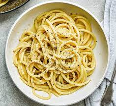

Pasta

Description
This humble and fragrant spaghetti with garlic and olive oil brings me back to my childhood. It's
a classic Italian pasta dish that requires a few cheap ingredients, little effort, and it's ready in 10 minutes.
It's a super quick spaghetti recipe, delicious and packed with flavor, which comes in handy any time.
Absolutely perfect for sharing with friends or after a long day, when you decide pasta is for dinner tonight.
Ingredients
- Regular or whole wheat spaghetti
- Extra virgin olive oil
- Garlic
- Fresh or dried chili flakes
- Salt
- Parmesan cheese (optional)
- Parsley (optional)
Steps
- Cook your spaghetti until al dente
- Meantime, fry gently garlic and chili in olive oil
- Drain spaghetti, reserve 1/2 cup cooking water
- Add spaghetti and parley to the skillet
- Add as much cooking water as needed to make the pasta moist
- Stir well to coat
- If you don't keep it vegan, serve with parmesan cheese
- Sprinkle extra chili flakes and parsley, if you like. Enjoy!